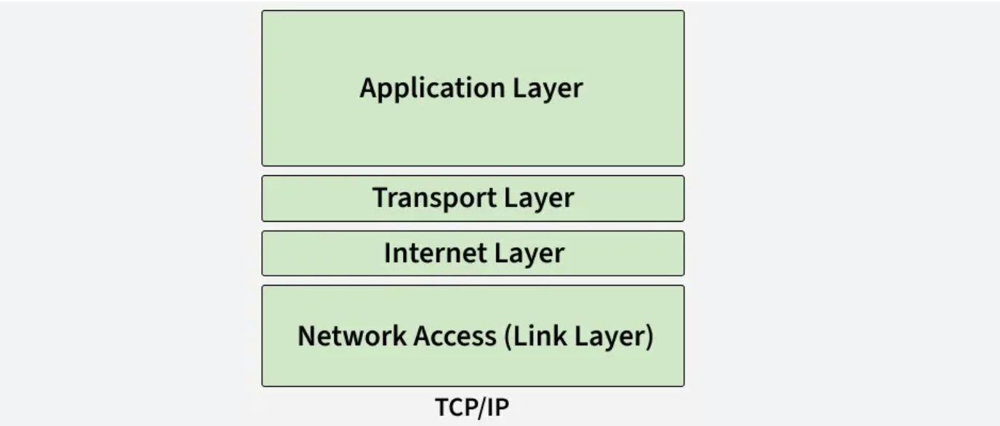

TCP/IP is the foundational suite of communication protocols that governs how data is transmitted across the Internet. It defines the rules for packaging, addressing, routing, and receiving data between devices on a network. The suite is named after its two most important protocols — TCP and IP — though it encompasses many others.
Internet Protocol (IP) handles addressing and routing — it ensures each data packet is labelled with source and destination IP addresses and sent along the correct path across networks. Transmission Control Protocol (TCP) provides reliable, ordered, and error-checked delivery of data by breaking it into packets, sending them, and reassembling them at the destination — retransmitting any that are lost.
Key features of TCP/IP include: